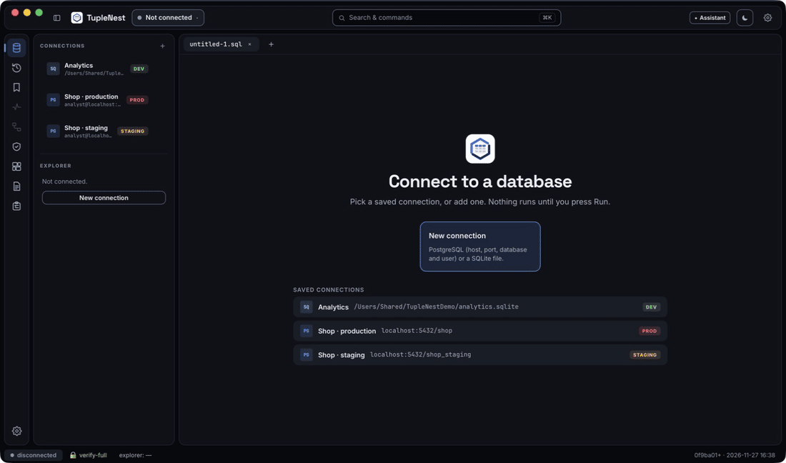
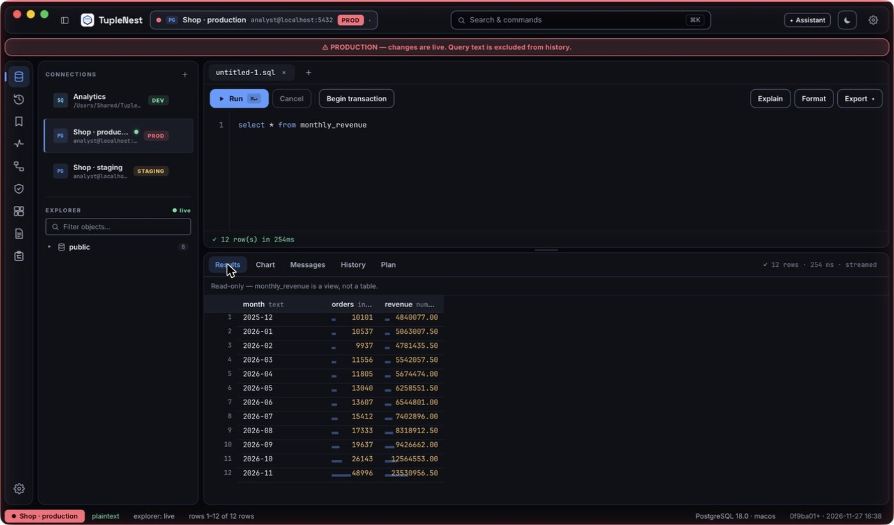
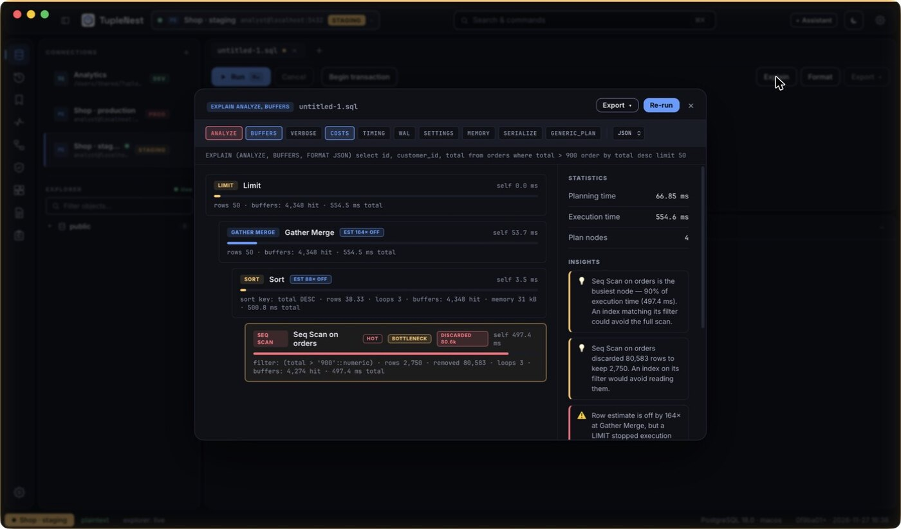
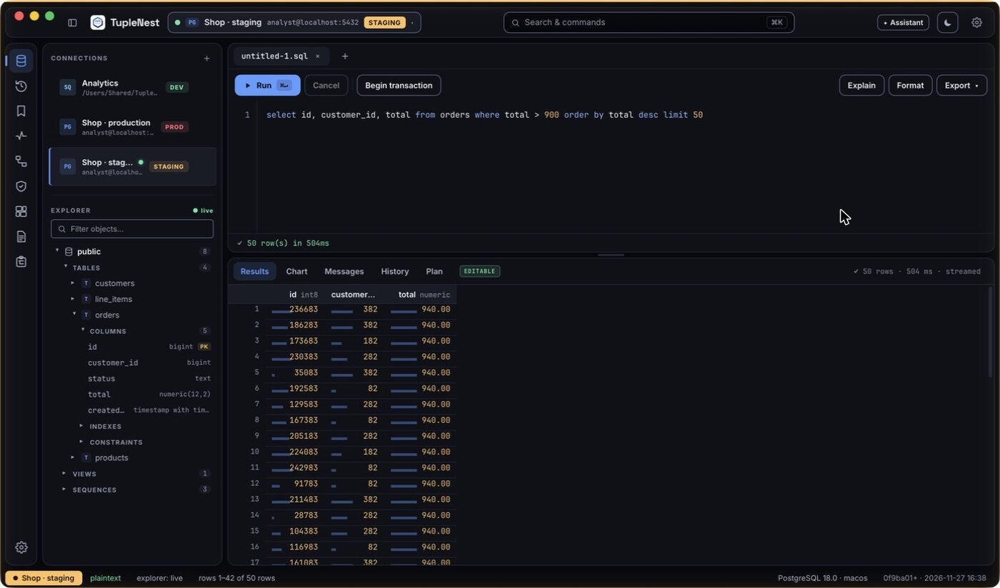
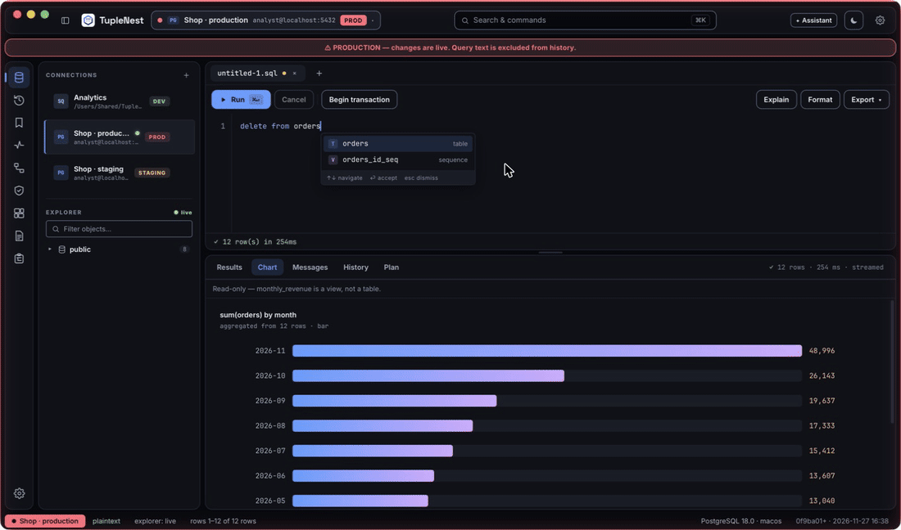
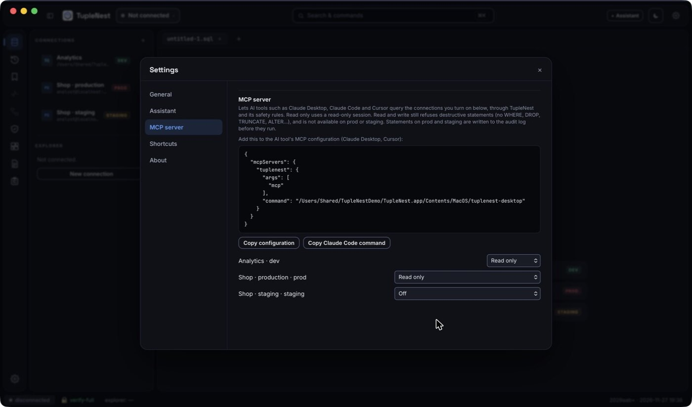

Everything you need.
Nothing you don't.
A focused environment for PostgreSQL and SQLite: writing queries, exploring schemas, understanding performance, and working safely with real databases.


Smart SQL editor
Built for PostgreSQL specifically — the literal masking understands dollar-quoting, nested comments, and E'' escapes, so features like the destructive-statement guard read the real query rather than raw text.
- PostgreSQL syntax highlighting
- Completion from the live catalog: schemas, tables, and the columns of tables in scope — including through aliases
- Keyword and built-in function completion from a static list
- Find and replace (
⌘F) — literal text, with a match count and a case toggle - Comment or uncomment the selected lines (
⌘/) - One-key formatting
- Multiple editor tabs with unsaved-change indicators
- Query history and reusable snippets
- Query parameters (
$1..$n) with real bind parameters, never string interpolation

Results that stay responsive
Rows stream from a bounded store into a virtualized grid, so large or wide results don't freeze the window. A plain read stops at the 20,000-row cap on the server, and the footer says "20,000+ rows (stopped at the limit)" instead of passing the cap off as the total.
- Streaming result loading, virtualized rows
- Column sorting over every stored row (up to 20,000), done in the backend so the window never holds them all
- NULL rendered as a distinct
null, never as an empty cell - Copy the selected cell, or the whole result as CSV or Markdown
- Export (CSV / JSON / Markdown)
- Query duration, row count, truncation indicators
See why a query is slow — and what to build
The plan view finds the node that actually costs you time, names the specific problem, and writes the CREATE INDEX that fixes it — so you leave with a statement, not a wall of text.

- Candidate indexes — the statement, not just the advice, with a copy button
- Self-time bottleneck highlighting — the busy node, whatever its type
- Correct parallel accounting — worker time isn't double-counted as wall clock
- Rows read then discarded by a filter
- Disk sorts and hash spills
- Blocks read from disk vs cache, attributed to the node that read them
- Row estimates off by 10× or more
- Nodes executed very many times; nodes never executed
- JIT and trigger time — the work no plan node accounts for
- Node-by-node plan comparison — which node got slower, not just the query
- Schema diff, and generated migration DDL
- The plan view,
ANALYZEand plan comparison read PostgreSQL's JSON plans - On SQLite, EXPLAIN shows
EXPLAIN QUERY PLANas rows in the grid: there are no costs to compare - What comes next is on the roadmap
It writes the index, not just the advice
- A sequential scan applying a filter, or an indexed scan discarding a lot of rows to a residual filter, produces a runnable
CREATE INDEXwith a copy button - Equality columns first, then one range column — the only ordering a btree can seek on. Columns past the first range boundary are left out on purpose rather than padded in to look thorough
- Expression indexes for filters a plain column index cannot serve:
lower(email) = …becomesCREATE INDEX ON t ((lower(email))), with the expression preserved character for character — the planner only uses one that matches the query verbatim - Schema-qualified and quoted correctly, including identifiers that need it
And it stays quiet when it isn't sure
- Only what PostgreSQL will accept.
CREATE INDEXrejects any expression that is notIMMUTABLE, and volatility belongs to the resolved overload, not the name — so the advisor reads the column's real type.date_trunc('day', ts)is offered on atimestampand declined on atimestamptz, which reads the session time zone - An
ORbetween predicates — the planner wants a separate index per branch, not one composite - A join condition (column against column): indexing helps, but which side is a judgement it does not make blind
- An inequality — a btree cannot seek
<> - An expression over more than one column, or one it has no volatility evidence for
EXPLAIN, and confirm the planner actually abandons the sequential scan. A suggestion the planner ignores is a wrong suggestion however plausible it looked. That round trip is what caught CREATE INDEX ON orders (((created_at)::date)); — which PostgreSQL refuses outright, because casting a timestamptz to a date depends on the session time zone. The fix was to read column types instead of guessing, and the immutable-function list was then generated by querying pg_proc rather than written from memory, which removed four names that look obviously pure: date_trunc, to_char, concat and length. 17 of 17 cases now behave as designed — 1.9× to 1461× faster where an index is offered, silence where one cannot be built.Compare two runs node by node
- Run a query, change it, run it again — each node reports its own delta, so you see which one absorbed the time rather than only that the query got slower
- Nodes pair by type, relation and index name. A node with no counterpart is reported as added or removed, never force-matched to something it is not
- Timings are excluded from the matching key: they are what is being compared, so they cannot also decide identity
- A change is only called out past both a 1 ms and a 10 % floor — below that it is measurement noise, and flagging noise teaches you to ignore the flag
…and it says when the pairing is a guess
- Two siblings that look identical — an
Appendover matching partition scans — can only be told apart by position, and position is not evidence - Those pairs are labelled ambiguous rather than shown with the same confidence as the rest
- This is not hypothetical: silently guessing in exactly this situation is how the bottleneck badge landed on the wrong node in beta.5
EXPLAIN after building it tells you the planner will use it. The panel says exactly that, under every suggestion.Build the EXPLAIN, don't type it
- Every option the server takes, as a toggle:
ANALYZE,BUFFERS,VERBOSE,COSTS,TIMING,WAL,SETTINGS,MEMORY,SERIALIZE,GENERIC_PLAN - The statement it will send is shown before you send it
- Output as JSON, text, YAML or XML — the tree is drawn from JSON, and the panel says so plainly when you pick another
- Save the plan as JSON, text or Markdown to attach to a ticket
It refuses combinations the server would reject
TIMING,WALandSERIALIZEeach requireANALYZEANALYZEandGENERIC_PLANcannot be used together- Options newer than the server you're on are disabled and named —
MEMORYandSERIALIZEneed 17,GENERIC_PLAN16,SETTINGS12 - And it warns before the dangerous one:
EXPLAIN ANALYZEon anINSERT,UPDATEorDELETEreally executes it. The statement is parsed with the same literal-masking the destructive-statement guard uses, so aDELETEhiding inside a comment or a string doesn't trip it and a real one doesn't slip through
Gather, PostgreSQL reports one “loop” per worker, and those workers run simultaneously. Multiplying by loops — which is the obvious reading — can charge a single node more milliseconds than the entire query took. TupleNest divides workers back out, so self-times add up to the execution time. Checked against live PostgreSQL 15 and 18 across eleven plan shapes, including a parallel aggregate, an external-merge disk sort, a hash spill, a nested loop repeating 20,000 times, a never-executed branch, and a trigger that consumed most of its statement's runtime. JIT timing is covered by unit tests only: the servers used report jit=on but are built without LLVM, so they never emit JIT timings.A diff you can act on — without it acting for you.
Compare two schemas and TupleNest writes the ALTER script. It generates the DDL and never runs it: there is no execute button, and there will not be one.
- A new nullable column
- Dropping a
NOT NULLconstraint - Additive and reversible; cannot fail on existing rows
- A type change — PostgreSQL rewrites the whole table and holds an
ACCESS EXCLUSIVElock while it does - Adding
NOT NULL, which fails if any row holds a null - A new table: keys, defaults and indexes are not part of a column diff, so they are yours to add
DROP TABLE,DROP COLUMN- Returned already commented out, so pasting the script whole cannot run them
- Uncommenting one is a deliberate act, which is the point
Where it declines to guess
- A primary-key change needs the constraint's name, which a column diff does not carry — so that comes out as a commented sketch rather than a statement that would fail
- A newly added table is written in full only when the target's columns were loaded; otherwise it says so instead of inventing a definition
- Additive statements are ordered before removals, so a script run top to bottom never drops something a later line needed
Checked by making it converge
- Two schemas differing by an added column, a dropped column, a retyped column,
NOT NULLin both directions, an added table and a dropped table - 7 statements generated, 7 accepted by a live PostgreSQL, 0 differences remaining afterwards
- Producing valid-looking SQL is not the claim; converging the schema is, and that is what was measured

Browse the whole catalog
A lazy tree that loads schemas, objects, and columns on demand and serves from a local cache when you're offline.
- Schemas, tables, views, materialized views, foreign tables, sequences
- Columns, indexes, constraints, partitions, types and enums, functions
- Foreign keys, and a sequence's owning column
- Global object search and refresh
- Diff two schemas, then generate the
ALTERscript — see below - Open an object straight into the editor
The database as a graph
A relationship map generated from the real foreign keys in the catalog — a picture of how the tables actually join, without drawing it yourself.
- Table cards laid out with foreign-key links drawn between them
- Every relationship also listed in full underneath, so nothing depends on reading the picture
- The diagram is a static view; panning and zooming are planned

Safety as a workflow
Classify each connection, make production visually distinct, and let PostgreSQL itself enforce read-only when you ask for it.
- Environment classification and a production badge
- Read-only session characteristic (server-enforced)
- Destructive-statement detection and confirmation dialogs
- Transaction-state visibility and tab ownership
- A per-connection query timeout, enforced by the server's own timer
- Cancel a running query from the toolbar or with Esc
- Clear warning language, and least-privilege guidance
Connections you can trust
Profiles
- Saved profiles
- Dev / test / staging / production classification
- Passwords never stored in the profile itself
Transport
- Four TLS modes
- Custom CA certificate
- SSH tunnels with host-key verification
Credentials
- Keychain-backed passwords
- Staged connection test: DNS → TCP → SSH → auth, stopping at the first failure
- Each test stage bounded by its own timeout
PostgreSQL and SQLite, done properly.
A new connection starts by picking one of the two. TupleNest is currently focused on these engines. Both get the same safety model: environment tags, read-only profiles, the destructive-statement guard, the production audit log, and MCP access that is off until you turn it on.
PostgreSQL 13+
- Everything on this page
- TLS that fails closed, SSH tunnels with host-key verification
- Contract tests against PostgreSQL 13, 15 and 17
SQLite 3
- A file on this machine — type the path or choose it; optionally create it on connect
- Read-only enforced by SQLite: a read-only open,
PRAGMA query_onlybefore every statement, and writing statements refused, soATTACHorVACUUM INTOcannot get around it - Explorer, search, ER diagram, row editing (by primary key or rowid), dashboards and notebooks
- Not for SQLite, and hidden or disabled with the reason: server monitor, health, partitions, schema and plan compare, the plan view, CSV import, backup, roles, TLS and SSH
Ask about the query, not about your data.
Ask about the query and schema, explain a slow query, fix a failed one (shown as a diff), or write SQL from a plain-English request. Open it from the title bar or with ⌘J.
Your provider, your key
- Claude with your own Anthropic API key, kept in the OS keychain like a database password
- A local model through Ollama,
localhost:11434by default; another computer only if you allow it - Off until you add a provider in Settings › Assistant
Exactly what is sent
- Your message and the recent turns of that conversation
- The editor's SQL, for Ask, Explain and Fix
- For Fix, the error with the server's
DETAILandCONTEXTlines removed — they can quote row values - Schema, table and column names and types of the connected database, capped
- Never: row data, history, the connection's host, user or password, other connections
Let AI tools query — on your terms.
tuplenest-desktop mcp serves the Model Context Protocol on stdin/stdout, with no window, so Claude Desktop, Claude Code or Cursor can query your saved connections through TupleNest's rules. Settings › MCP server shows the config to copy.
| Access | What an AI tool can do |
|---|---|
| Off (default) | Nothing. The connection is not listed, and naming it gets the same answer as a name that does not exist |
| Read only | The server-enforced read-only session a read-only profile gets, plus the allowlist of statements that only read |
| Read and write | Writes run, but anything the guard would ask about is refused, since no one can confirm it. Not available on prod, staging or read-only connections |

MCP · <client>. Rows a tool reads go to that tool, and wherever it sends them — that is what MCP is for, and why every connection starts off.Beyond the editor, one header away.
Each page takes the editor's place, which stays open behind it. Every page has the same header and a way back; Esc returns to the editor from any of them.
History & Saved queries
- Search and filters: this connection, writes, failed, today
- Who sent each statement, including MCP clients
- Saved queries as cards, with tags
Dashboards
- Saved queries as bar, line or single-number charts
- Re-run on open, or every 1, 5 or 15 minutes
- Only a query that reads can be pinned; 1,000 rows per run
Notebooks
- Text, SQL and chart cells in one document
- A SQL cell runs only on its own Run, through the guard and audit log
- Each SQL cell keeps its last 200 rows, on disk; export to Markdown
Backup & restore
- Your own
pg_dump(custom format) andpg_restore, no shell - The password never on the command line
- Typing the database name to restore into prod or staging; never into a read-only profile
Users & roles
- Each role's table privileges, membership included
- A warning when a role that looks read-only can write
- Changes nothing: the
REVOKEorGRANTis text to copy
Settings & onboarding
- General, Assistant, MCP server, Shortcuts, About
- What's new once after an update
- A three-step tour on a first launch
Analyse a plan without handing it to a website.
The usual way to get a query plan analysed is to paste it into someone else's server. That means sending your table names, index names, filter conditions — and sometimes literal values out of production — to a third party. TupleNest reads it locally instead.
Paste what you actually have
- The indented text straight from psql
- Or
FORMAT JSON - The format is detected as you type
- Unrecognised text says so immediately, rather than drawing a misleading tree
- A paste that is only part of a plan is called out as one
The same analysis, no connection
- Self-time bottleneck, disk sorts, hash spills
- Rows read then discarded; disk-vs-cache reads
- Row misestimates, loop counts, never-executed branches
- JIT and trigger time — the work no node accounts for
VERBOSE — it failed five ways, because the first set of plans happened to contain no CTE Scan at the top of a tree and no SubPlan in a target list. One of those bugs put the bottleneck badge on the wrong node. All five are fixed and each has a test that was confirmed to fail beforehand. The honest lesson is about the check, not the parser: a suite that only sees one server's output only proves things about that server.Move data in and out, safely
Import
- CSV import with header mapping
- Inferred column types and a preview of the first rows, with the generated
CREATE TABLEshown before you commit - Runs in a transaction and rolls back on failure
- Files larger than memory. The file is streamed, not loaded: a 358 MB CSV of 6,000,001 rows imports with about 15 MB of peak memory growth, where reading it whole exhausts the heap. Only one batch is held at a time
- Progress by percentage of the file read — the row total is not known until the file has been read, and the UI does not pretend otherwise
- Cancel mid-import: the read stops and the transaction rolls back
Export
- CSV, JSON and Markdown to a file; CSV or Markdown to the clipboard
- Spreadsheet-safe CSV on by default (formula-injection neutralized)
- Raw-value mode when you need it
= + - @ (or tab/CR) are neutralized so Excel, Sheets, and LibreOffice treat them as text, not formulas. A toggle lets you opt into raw output.Hands on the keys
Shown with macOS keys. On Windows and Linux, ⌘ is Ctrl.
? in the app for its own cheatsheet.A Rust core in a Tauri shell
Rust backend
Speaks the PostgreSQL wire protocol directly, and reads SQLite files in-process.
Streaming architecture
Rows flow through a bounded store, not one giant buffer.
Bounded memory
Row, byte, and per-cell limits keep RAM in check.
Fast startup
A native shell, not a bundled browser runtime.